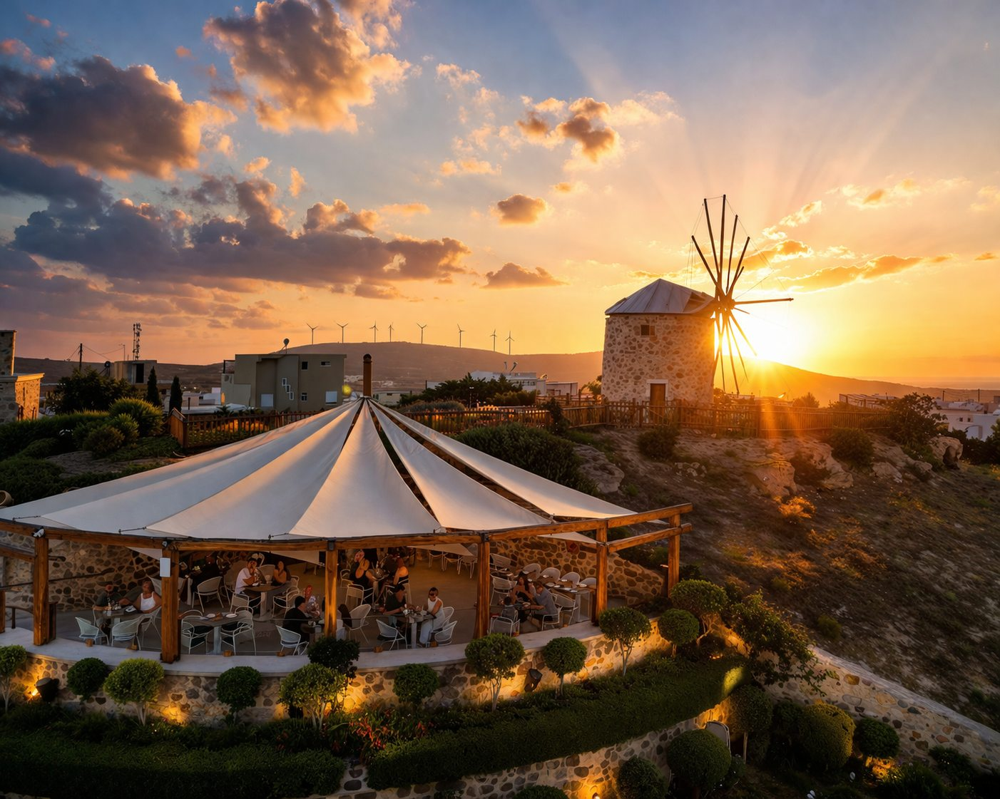

1Welcome

Welcome to Windmill Experience!
- Travel Back in Time: Get ready to step into the past! You won't need a time machine for this journey, just some comfy shoes.
- A Restored Village: Thanks to the beautiful restoration by the Voudouris family, you will see exactly how islanders lived over a century ago, long before Wi-Fi was even invented. You'll also get to snoop around and uncover some secret history from the 1940s!
- The Miller's Life: Today, you get to walk in the shoes of a real wind miller. Spoiler alert: his daily workout routine consisted of lifting heavy sacks of flour all day just to feed the majority of the village.
Read the storyShow less
Audio transcriptHide transcript
Welcome to Windmill Experience!
Ready to travel back in time? (Don't worry, you won't need a time machine, just some comfy shoes!) Thanks to the Voudouris family, who beautifully restored this village, you can see exactly how islanders lived over a century ago long before Wi-Fi was even invented! You'll also get to snoop around and explore some secret history from the 1940s.
Today, you get to walk in the shoes of a real wind miller. Spoiler alert: his daily workout routine was just lifting heavy sacks of flour all day to feed the majority of the village! You will explore his giant, working windmill from bottom to top, peek inside a traditional house, bakery, sniff the wonderful herbs in our gardens, visit our threshing floor, our lovely donkeys and walk through a real military tunnel.
A Secret Mission for Young Explorers!
We will give your special Mylotopi Sketch and few colored pencils. As you walk around today, keep your eyes wide open! Look very closely at the giant windmill, the heavy stones, and the old tools. Try to memorize all the beautiful colors! When you finish your adventure and reach our restaurant-café, you can color in your drawing and make it a masterpiece!
Then move forward to our gardens with herbs!